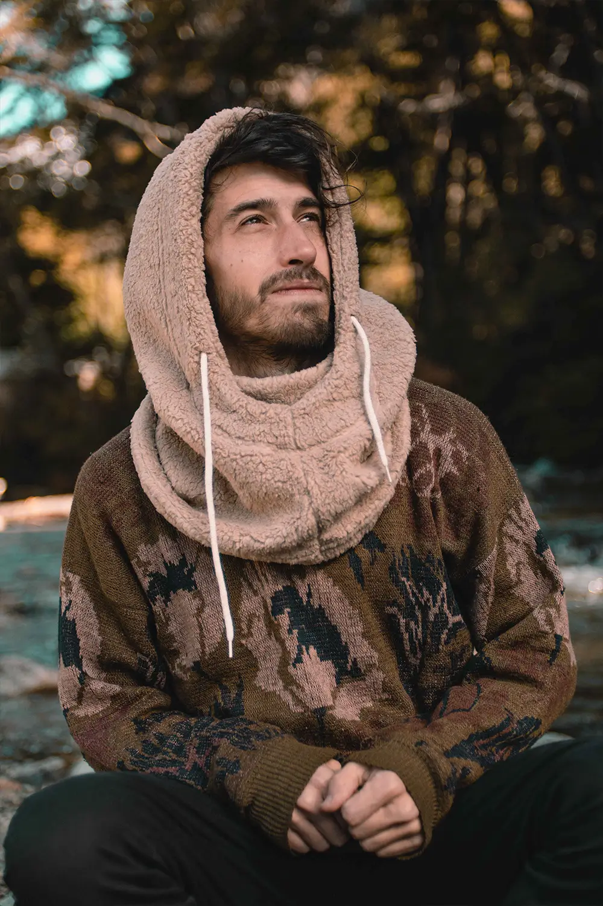
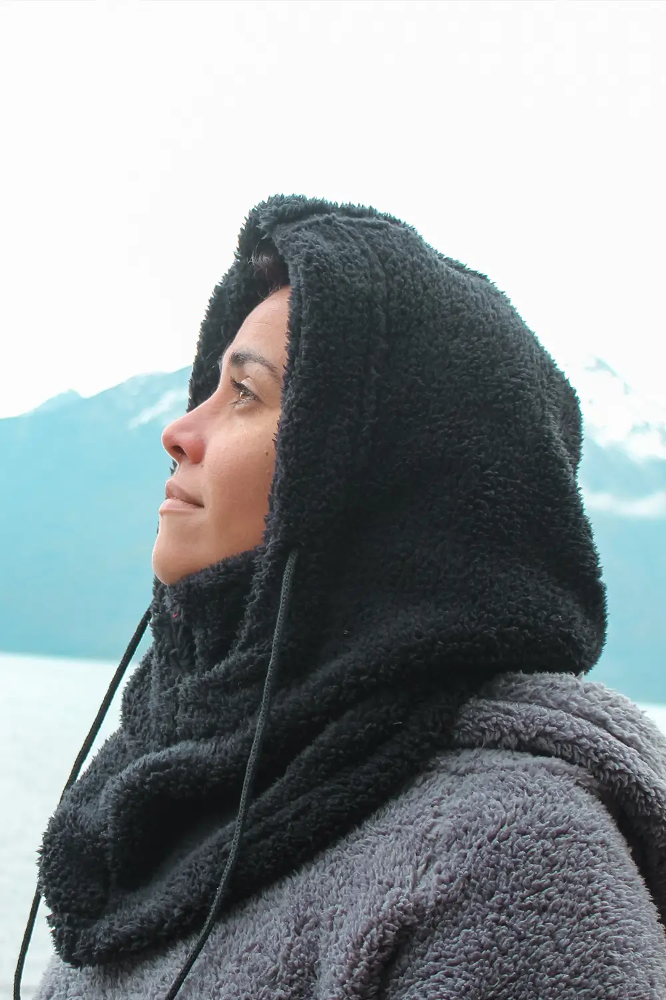
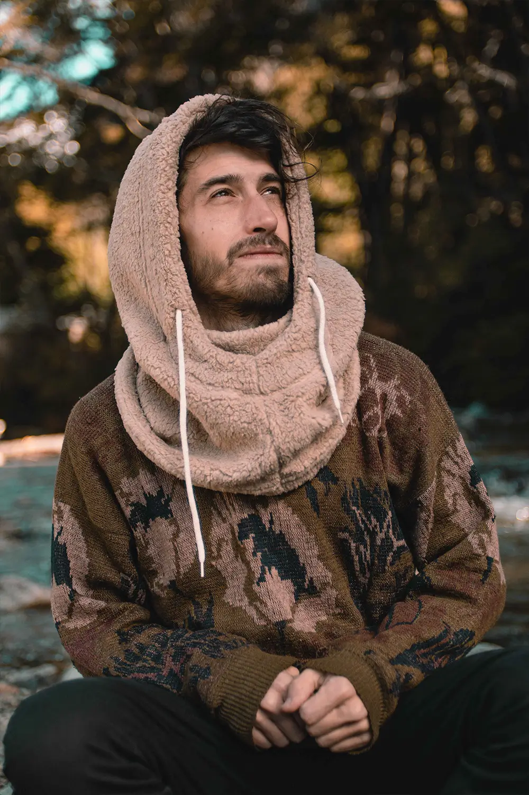
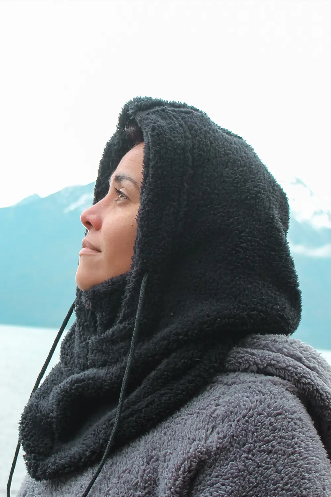
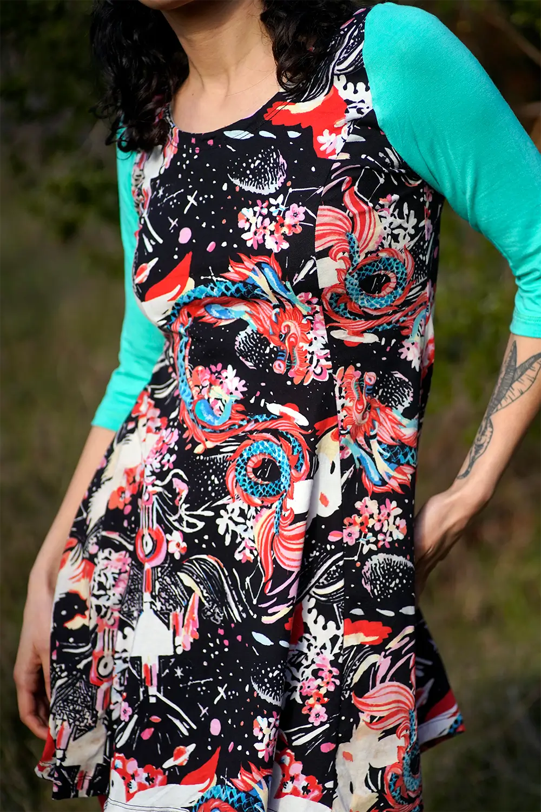
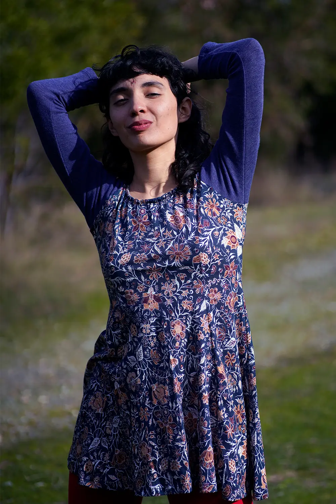
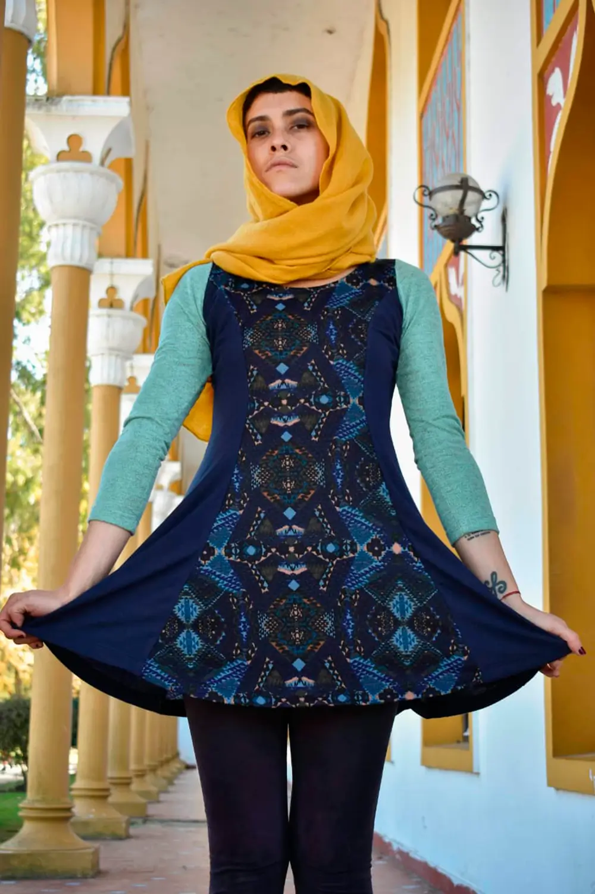
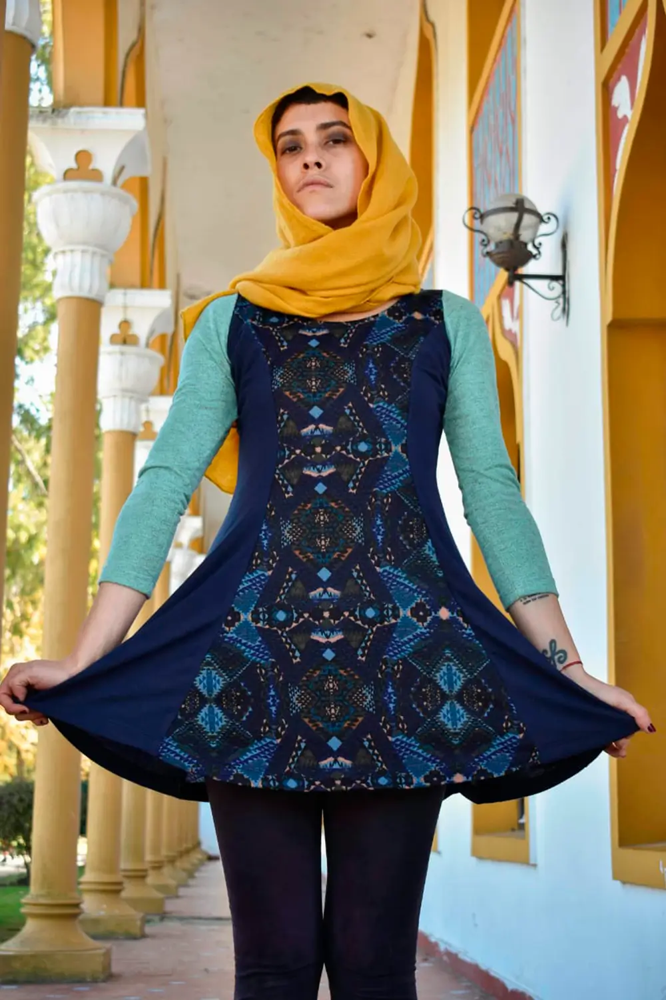

SOMBRERO CAPELINA
- Estos sombreros de ala ancha son ideales para la playa, para trabajar la tierra, para protegerte del sol.
- Hay variedad en estampados y colores, para todas y todos.
- Reversibles; de un lado estampados y del otro liso. Lavables y fáciles de llevar dentro de un bolso.
- Material: brin, éntrela y algodón
- Medidas: ala ancha 10cm.Vienen del talle 1 al 4, consulta el talle en la tabla de medidas.
- PRECIO:$25.000
SOMBRERO CLÁSICO
- El clásico de siempre, para la playa, para andar en bote, surfear, trabajar la tierra, jugar, cantar y bailar.
- Hay variedad en estampados y colores, para todas y todos.
- Reversibles; de un lado estampados y del otro liso. Lavables y fáciles de llevar dentro de un bolso.
- Material: brin, éntrela y algodón
- Medidas: ala 8 cm.Vienen del talle 1 al 4, consulta el talle en la tabla de medidas
- PRECIO:$20.000
SOMBRERO CLÁSICO INFANCIAS
- Sombreros que cuidan y protegen a tu niño/a del sol. Cómodos, coloridos, en muchos estampados y colores. Poseen unas tiras para atar. Reversibles y lavables
- Material: Brin, entretela, algodón o gabardina.
- Medidas: talle 0 (bebés hasta 1 año), talle 1 ,2 ,3 y 4.
- PRECIO:$15.000
SOMBRERO PAÑUELO
- Estos sombreros cuentan con un pañuelo en la parte de atrás, de este modo te lo podés atar en la cabeza Son livianos, prácticos y cómodos.
- Una buena elección para hacer regalos, tienen talle regulable. Hay variedad en estampados y colores
- Reversibles; de un lado estampados y del otro liso. Lavables y fáciles de llevar dentro de un bolso.
- Son lavables y muy fácilmente los doblas y te lo podés llevar de viaje.
- Material: brin, éntrela y algodón
- Medidas: ala ancha 8 cm.Vienen del talle 1 al 3, consulta el talle en la tabla de medidas
- PRECIO:$20.000
 



CAPUCHA MEDEA
- Capucha de corderito suave, cómoda y abrigada. Para la ciudad o la montaña es un accesorio infaltable en tu ropero.
- Material: corderito o polar soft
- Colores: bordo, negro, verde musgo, azul y gris
- Medidas: largo 50 cm. Talle único
- PRECIO:$25.000
CAMISA MANGA CORTA
- Una camisa casual, cómoda y divertida. La variedad de talles permite que encuentres la que más te guste y vaya con tu outfit. Hay una gran variedad de estampados y colores, estas camisas son UNISEX.
- Material: fibrana
- Medidas: S Largo 60 cm, M Largo 67 cm, L Largo 70 cm , XL Largo 72cm , XXL Largo 80 cm
- PRECIO:$45.000
TOP TURMALINA
- Suaves, anatómicos, cómodos, sensuales y casuales. Ideales para salir a correr, hacer yoga y deportes de todo tipo.
- Son reversibles podés usarlo de ambos lados, y combinarlos con tu estilo diario.
- Material: microfibra y modal
- Medidas: talle s, m y l
- PRECIO:$18,000
MURCI MANGA CORTA
- El diseño y las combinaciones son el tesoro de estas remeras. Un corte único que se adapta a tu cuerpo. Su forma permite usarlas como más te gusta, al cuerpo o bien sueltitas. Puños de cintura y mangas elastizado.
- Material: modal y puño de algodón
- Medidas: largo 60 cm.Talle único abarca de small a large.
- PRECIO: $25.000
MURCI MANGA LARGA
- El diseño y las combinaciones son el tesoro de estas remeras. Un corte único que se adapta a tu cuerpo. Su forma permite usarlas como más te gusta, al cuerpo o bien sueltitas.
- Material: modal y puño de algodón
- Medidas: largo 65 cm. Talle único abarca de small a large
- SIN STOCK
MURCI DE PLUSH
- El diseño y las combinaciones son el tesoro de estos remerones. El clásico e infaltable en tu ropero, PLUSh y puños de algodón. Un corte único que se adapta a tu cuerpo. Su forma permite usarlas como más te gusta, al cuerpo o bien sueltitas
- Materiales: plush de algodón y puño de algodón
- Medidas: largo 65 cm. Talle único abarca de small a large
- SIN STOCK
MURCI DE LANILLA
- El diseño y las combinaciones son el tesoro de estas remeras. Remerones de Lanilla y puños de algodón. Un corte único que se adapta a tu cuerpo. Su forma permite usarlas como más te gusta, al cuerpo o bien sueltitas.
- Material: lanilla lisa y estampada
- Medidas: largo 65 cm. Talle único abarca de small a large.
- SIN STOCK


 

VESTIDO AMAPOLA
- Vestidos de modal,manga larga y tres cuarto
- Talles: small ,busto 80/90,cintura 70/80 mediano ,busto 100/110,cintura 90/100
- PRECIO:$30.000
PARTES DE ABAJO
- Calzas de terciopelo y lanilla con cintura elastizada.
- Babuchas de lanilla, modal y plush.Con cintura elastizada y puños.
- Pantalones de lanilla y plush,Con cintura elastizada.
- Talles:
- small,cintura 70/80,cadera 80/90.
- mediano,cintura 90/100,cadera 100/115.
- large,cintura 100/115,cadera 120/130.
- xl,cintura 120/130,cadera 130/145.
- PRECIOS:
- Calzas: $25,000
- Babuchas: $30,000
- Pantalones de plush: $50.000
BUZO CORDERITO
- Buzo de corderito liviano, cómodo, suave y abrigado. Con bolsillos y capucha. Una prenda para todos los días para todos y todas.
- Material: corderito o polar soft
- Colores: negro, azul, bordo, gris, verde musgo
- talle único abarca de small a large. Largo 70 cm
- PRECIO:$50.000
BUZO CORDERITO OVERSIZE
- Buzo corderito oversize con capucha, bolsillos, abrigado y suave. Una prenda para todos los días para todos y todas.
- Material: corderito o polar soft
- Colores: azul y bordo
- Medidas: talla oversize. Largo 80 cm
- PRECIO:$60,000
¿QUIENES SOMOS?
Hace 16 años venimos produciendo todos nuestros productos en la Patagonia de nuestra Argentina, en la ciudad de San Carlos De Bariloche.
Todas nuestras prendas son de edición limitada, los estampados casi nunca se repiten y las combinaciones tampoco. Por eso ideamos esta página para que puedas contactarnos y te enviaremos fotos de cada producto y así puedes elegir la combinación que más te guste.
No estamos a favor de la explotación textil y reciclamos todos nuestros residuos, enviándolos a escuelas y talleres para usos artísticos.
MAYORISTAS
Si tenes un local o queres ser vendedora/or de nuestros productos el siguiente link de whatsapp y nos contactanos con vos.